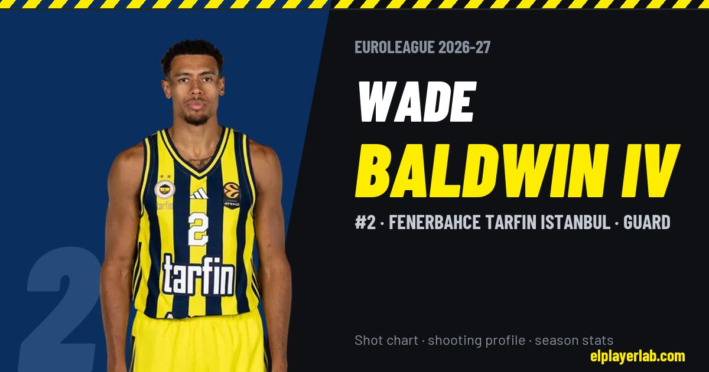

Fenerbahce Tarfin Istanbul · Euroleague 2026-27
Wade Baldwin Iv
#2 · Guard · Fenerbahce Tarfin Istanbul · 2026-27 · 3 games · 13.0 pts · 3.7 reb · 6.3 ast a game

- Number
- 2
- Position
- Guard
- Height
- 193 cm
- Weight
- 90 kg
- Born
- 1996-03-29
- Country
- United States of America
Career
- Fenerbahce 2024-2027
- Maccabi Tel Aviv 2022-2024
- Baskonia 2021-2022
- Bayern Munich 2020-2021
- Olympiacos 2019-2020
- Raptors 905 2019
- Texas Legends (loan) 2017-2019
- Portland Trail Blazers (NBA) 2017-2018
- Iowa Energy (loan) 2016-2017
- Memphis Grizzlies (NBA) 2016-2017
- Vanderbilt (NCAA) 2014-2016
Euroleague Player Lab: shot charts, shooting profiles and season stats for every player, rebuilt after every game.